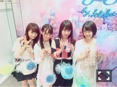

| 2016/08 12 Fri | 中元日芽香 ひめたん-0o0-その661 |
ブログタイトルのカウントが
まともに数えられない日芽香ちゃん(・∀・)
この文言も書き過ぎだよね(・∀・)
今度から間違えてても
私気にしないことにしたから
みんなも気にしないで(・∀・)ノ

10日は秋元・高山・堀・中元で
Samantha Thavasa presents
"Bon-Bon Voyage!" by KLOKA
に潜入してきました！
8/11(木)～9/9(金) 表参道GATES
可愛いスイーツやオリジナルグッズなど
女の子が大好きな、素敵な空間でした
LINE LIVEで観てくださった方ありがとう！
夏休み、是非足を運んでみてね(^o^)
11日はアルバム特典イベントでした
光の関係なんだろうけれど
めっちゃ茶髪！私！
来てくださった皆さん
ありがとうございました＼(^o^)／山の日
そして本日12日は
TOKYO FM 「よんぱち」に
高山・中元で出演してきました～
鈴木おさむさん、岡部茉佑さん、
そしてリスナーの皆さん
お邪魔しました～( ˆωˆ )
80年代90年代のアルバムを紹介するという
素敵なテーマでした！
皆さんのオススメのアルバムはありますか？
あとはーなんだろう、
SHIBUYA TSUTAYAさんにて
メンバーのサイン入りパネルを
展示していただいてます！
写メにもちょっと写ってるけど
プレゼントキャンペーン実施中です
渋谷に行った際は
お立ち寄りくださいね。
～お知らせ～
雑誌
8/23 BRODY
8/24 ストリートジャック
ラジオ
8/20 God Bless Saturday
リリース
9/30 NOGIBINGO!6 BD&DVD
発売中の雑誌CM NOWにて
From AQUAの記者会見の様子と
インタビューが載ってます～＊
明日明後日は仙台公演、
全国ツアーも折り返しですね。
毎公演 反省と吸収、それから
会場の熱気を直に感じて
高揚感と外気でフワフワしたまま次の地へ。
今年の夏はキャッチすること多くて忙しい！
故に、
最近 常に眠い。
(＊´・ω・＊)